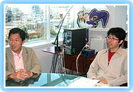

|
| N.O.M ドリームキャストからゲームキューブになって、グラフィックは描きなおしたんですか。 |
| 中 『エピソード２』は描きおろしですね。でも、『エピソード１』のほうは、ドリームキャスト版の流用もしています。マルチモードのことを配慮して、それほどやり直しはしていないんです。それでも、ドリームキャストのときとまったく同じクオリティで、４分割した画面が出るというのは、スゴいことなんです。やはりゲームキューブでマシンのスペックが上がったことは大きいですね。 |
| 畑 スゴいことをやっているとは思われていないんですが、実は我々の中ではかなり高度なことができているという認識なんですね。今回、ロビーも一新されるんです。トライアル版では従来のロビーでしたが、製品版ではキューブ用に新しく作り直したロビーが登場します。クリスマスにツリーが出てきたりとか、季節ごとのイベントもいろいろと発生しますので、楽しみにしてください。ロビーアクションも増えたんですよ。 |
| N.O.M そういったアイデアは、中さんが考えるんですか。 |
| 中 いえいえ、開発チームのみんなで考えるんです。 |
| 畑 常にケンケンガクガクで討論しています。アイデアをリスト化していって、何が必要かというのを、検討しているんですよ。 |
| N.O.M 武器やアイテムなどで、特に強化した部分はありますか。 |
畑 武器やアイテムはゲームキューブになって新しく追加していますね。全体的に、キャラクターごとの格差が出ないように、バランスを調整し直しています。
中 いままでちょっとフォース（ＰＳＯにおける「魔法使い」）が使いづらかったので、そのへんを改良したりとか。どのキャラクターでも、そんなに差がなく遊べるようになったと思います。サウンドの面でも、ドルビーサラウンドプロロジック２に正式対応したので、サラウンドのシステムを持っているかただったら、かなり臨場感あふれるプレイができると思いますよ。敵が左後ろに出ると、左後ろのスピーカーから音が出ますし、ビームの音などもちゃんと前から後ろへ流れるんですよ。 |
| N.O.M しかし、それは作るほうが大変ですね。 |
| 中 そうなんです。見えないところにめちゃくちゃ手間がかかっているんですよ。今回はキューブの性能にあわせて完全新作を作ったようなものですね。 |
|
| N.O.M ＰＳＯではほかのネットワークゲームのように、他プレイヤーにアイテムを盗まれたり、殺されたりしないのがいいなあと思うのですが。 |
| 中 盗みは、実はドリームキャストのときはできたんですね。現実の社会でも悪い人はいるわけで、そういったアクシデントもあったほうがいいんじゃないかと。ただ、やはりユーザーさんの反対意見が多かったのと、子どもたちがアイテムを盗まれたらかわいそうだということで、今回の作品では盗みは出来ないようになっています。 |
| N.O.M 協力してプレイしていくスタイルが、楽しいですよね。 |
| 中 仲良くすることが、上手くプレイするコツみたいなところがありますね。ＰＳＯで出会って結婚した人もいるんですよ。僕がオンラインに入っていって、お祝いの花束を渡したこともあるんです。 |
| N.O.M ええ？ そうなんですか！ |
| 中 もう何組もそういったカップルがいます。国際結婚もありますよ。大阪に住んでいる女の子がＰＳＯでずっと親しくしていたオハイオ州の男性に会いに行って、そのまま結婚しちゃったんです。ゲーム自体は男女関係なく楽しめるものなので、その中で愛が芽生えることもあるみたいですね。先日、台湾でＰＳＯのイベントを開催したんですが、コスプレをしている人もたくさんいましたね。そんな風に、世界的に盛り上がってくれているので、うれしいです。ネットワークに入ったときのおもしろさはすごく大きいので、ぜひそこまでたどりついて欲しいですね。 |
| N.O.M トライアル期間中に寄せられたユーザーからの要望を反映させた部分はありますか。 |
| 中 ええ、何千とありますよ。バグは本当にたくさん指摘してもらいました。 |
| 畑 ユーザーさんから来たメールは、ソニックチームの全員が閲覧できるようにしてあるんですよ。ですから、クレームが来た時点で担当者が訂正していくんです。 |
| 中 仕様を変更しないといけないことも、結構ありましたね。そういうのは、社内で普通にプレイしているだけではわからないんですよ。そういう意味では、本当にありがたかったですね。トライアルには１万人参加してくれたんですけれど、普通はないことですから。 |
| N.O.M 海外版も発売されるんでしょうか。 |
| 中 ええ。うまくいけば10月頃発売されます。サーバはアメリカともヨーロッパともつながりますよ。翻訳にはワードセレクトシステムというシステムが使えます。そのシステムを評価していただいたんだと思いますが、昨年ゲーム大賞をいただきましたし、文化庁からもメディア芸術祭特別賞をいただきました。イギリスのＢＡＦＴＡ（バフタ、イギリスのアカデミー賞と呼ばれる賞）やオーストリアのマルチメディア系の賞ももらいましたね。ワードセレクトのほかにも、絵文字のようなものを使ったシンボルチャットシステムがあるので、そういうものを駆使して、海外のユーザーと交流してもらっています。 |
| N.O.M 今度はキューブを使って、海外の人たちとプレイするのが楽しみですね。最後に、Ｎ．Ｏ．Ｍの読者へひとことずつお願いいたします。 |
| 畑 初心者もドリームキャストからのユーザーのかたも、存分に楽しめる構成になっていると思います。末永く遊んでやってください。 |
| 中 ＲＰＧを人と遊ぶ感覚をぜひ知ってほしいということと、人と遊ぶイコール対戦ではないということを実感してもらいたいなあと思います。オンラインにしなくても、まずはだれかと一緒に遊んで、もし気に入ってもらえたらオンラインに入ってきてください。そうすれば、もっと世界が広がって、今度は地球の裏側の人たちと一緒に冒険ができます。そのへんを楽しんでもらえれば、すごくうれしいですね。 |
|  |